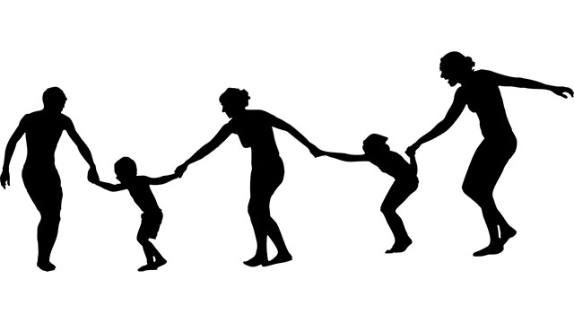

ときどきこんな人に出会います。
「私は隠しごとをする人が許せない」
つまり裏表（ウラオモテ）のある人、腹の内を見せない人は信用できないということです。
人は素直であるべきだ、正直であるべきだという考えには私も同感します。
しかし、親が子どもに「隠しごとはダメよ。正直に何でも話しなさい」というのを聞くと少し違和感を覚えます。事実、「ウチは何でもオープンに話し合うのを心がけていますから……」と少々自慢げに語る親がときどきいますが、なんとなく興ざめの思いがします。
それはこう言っているように聞こえるからです。
「ウチの子はウラオモテのない素直な明るい子です。なぜって子どもが小さい頃から何でも話せるオープンな家庭づくりをしてきたからです。」
……とまぁ、健全な家庭であることを訴えているわけですね。そして「ウチの子に限って隠しごとなどしない」と。
我が子を「隠しごとをしない」と信じることは結構ですが、ここには親の錯覚からくる思い込みがいくつかあります。
まず子どもが、特に思春期にもなれば親に何も隠しごとがないことなどあり得ないという当たり前の事実を認識していないこと。
第二に「オープンに話し合えば」健全な家庭が出来上がるという単純過ぎる因果論を信じていること。
第三に「ウチの子は素直で明るく、ウラオモテがない」というのはあくまで親の主観的判断であって客観性に欠けているということです。
厳しい言い方をしましたが、実は次のようなことが気になっているからです。
最近「親の前だけ良い子」が増えているのではないか!?
昔のようにヨソの子を泣かせた、転ばせてケガさせ怒鳴り込まれるような子が減る一方で、親の前では良い子なのに外ではけっこう悪さをしている子がどうも増えている。
これは「素直」で「明るく」「ウラオモテのない」性質と正反対ではないでしょうか。
“正しさ”だけを求めるなかれ
昔は、親の前では不貞腐れていて反抗的で素直じゃないのに、案外、学校や仲間うちでは「イイ奴」と評価される子も多かった印象があります。
今は逆に親の前では素直。それなのに学校などではイジメに加担していたり、そこまで目立った悪さはしないもののコソコソ─叱られない程度に─チョイワルはやるというケースを目にします。私は昔のヤンチャ坊主やガキ大将の方がシンプルな分、自然かつ健全な気がします。
発達心理学の点からも納得できるからです。
ところが今のチョイワル少年（少女）たちはやや陰湿でエネルギーの発散方法が不健全な感じがします。このような「親の前だけ素直」な、ウラオモテのある子どもが登場する背景には、皮肉なことに親が「正しいことばかり」を言い続けているからという事情があります。
「オープンに話せば理解し合える」
「隠しごとのないのが健全」
「人には優しく」……など。
どれも反論のしようのない「正しい言葉」です。
でも「正しい言葉」を言えば「正しい子ども」が育つわけではない。
正しい言葉をシャワーのように浴びせ、正しい言葉を言い聞かせ続けたところで「正しい人間」が出来上がるわけではない。
人間には二面性があります。
誰でも人に優しくありたいと願う半面、他者を妬んだり意地悪してしまう心理を持ち合わせているものです。真面目であろうとしながらダラシなく過ごしてしまうこともある。
その矛盾する両極の間を行ったり来たりするのが人間ではないでしょうか。光と闇を併せ持つのが人間といえるでしょう。
子どもに「正しさ」を強要することは、光だけを求めることであり闇の部分をますます抑圧することになりかねません。
親に正しいこと（光の部分）しか許されていない子どもは、もう一つの面（闇の部分）を親の目の届かないところで表現するしかない。「正しいこと」しか言わない親には、子どもも表立って反論（反抗）できない以上いびつな形で発散するしかないからです。
「伝えよう」をやめよう
では親はどうすればよいのか。
せっかく子どもを良い人間にしようと思って「人として正しい道」を教えているのに……
正しいことを言うなと言われても……
そう感じた親もいるかもしれませんね。
まず多くの親が錯覚していることを言います。
《錯覚その1》口で言っても伝わらない。
たいていの親は私のところへ子どもの相談に来ると次のように言います。
「ウチの子ホントに直前にならないとやらなくて……。それじゃダメだと言ってるんですけどねぇ」
親は「言えば伝わる」と思い過ぎています。
ここが親子の難しいところで、たとえば会社で部下に言葉で伝えることはできるし学校の先生も生徒に「正しいこと」を言葉で伝えることは可能です。しかし親子は別です。子に伝わるのは親の「ありがたい」言葉などではなく日頃の親の何気ない言動、仕草、クセ。要するに無意識的に発せられる「本音」です。
これはとても重要なことなのでしっかりと理解して欲しいところです。
こどもに「教えてやろう」「伝えてやろう」としている時点でアウトなのです。それは子どもを一定の方向に誘導しようとするコントロール（支配）欲求の発露だからです。
子どもは親の「作為」を敏感に感じ取り、表面的にはわかった風を装いながら心の内でブロックしてしまうのです。下手をすると親の「望み」と反対方向に走り出してしまう。
「じゃあ口で言わず行動で示せばよいのでは」と思うかもしれませんが、行動で伝えようと意図している限り同じことです。
このループ（堂々巡り）を避けるには方法は一つしかありません。
それは一切の意図を放棄するということです。
意図せず、ましてコントロールしようとせず誘導する意思を持たない。一個の人間として「自然体」で子どもと常に向き合うということです。
子どもは見抜いている
もう一つ。親が陥りがちな錯覚があります。
《錯覚その2》我が子は親が思うほど“子ども”じゃない。
「ウチの子は子どもっぽくて……」
これまたよく親が言うセリフです。それは親が「そう思いたい」だけで、だいたい思春期にもなれば親が思うほど「子ども」じゃないのが普通です。我々教育現場にいる者から見ても「ずいぶんマセてるなぁ」と思う子でさえ、親は我が子を子どもっぽいと思い込んでいるのでつい苦笑してしまうこともあります。
さて、ここで何が問題かというと「ウチの子は子どもっぽいから」あまり分かっていないだろうと思っていても、実は色々なことを分かっていてその中には親の「人物像」も含まれることです。親は油断していますが、子どもは思ったよりずっと「我が親」を冷静に見て分かっているということです。
たとえば冒頭に「隠しごと」の話をしましたが、子どものほうこそ親の「隠しごと」や「弱点」に気づいていたりするものです。日ごろ子どもに「何事も最後まであきらめずに……」などと言っている母親が自分はしょっちゅうパート先を変えていたり、友だちと仲良くと言いながらママ友の悪口を電話で話していたりいるのを、子どもはちゃっかり見聞きしているものです。まして夫婦間が微妙な状況の時など、子どもは完全に察知しています。
多くの親は子どもに見せたくない部分はうまく隠しているつもりだし、ウチの子はまだまだ子どもに過ぎないから「大人の事情」は分からないだろうと楽観していますが、そんなことはありません。
子どもはちゃんと見抜いているのです。
だから子どもに「正しいこと」を言葉で伝えてもダメなのです。「正しい親」を演じてもダメ。
このことをしっかり認識して欲しいと思います。
親であるか一人の人間であるか
結局家族の間では「正論」は役に立たないということになります。
親は腹をくくって「ありのままの自分」でいるしかない。欠点も弱点もある一個の人間として全てをさらけ出すことを自分に許すしかない。
そして子どもを「どうにかしよう」などと思わず自分こそが目の前の問題に全力投球する。その姿を通じて結果的に子どもに何か伝わるかもしれない。それが私の結論です。
それは子どもに何も言うなとか、好き勝手にさせておけということではありません。許せないことがあれば叱ってもよいし、怒ってもよい。叱りすぎて後で後悔しても構わない。それも含めて「自然体」だからです。
良い親を演じなくてよいのです。良い親だったかどうかは将来子どもが決めることです。
私も「立派な父親」であろうとは思わず、子どもの前で欠点もムキ出しにして過ごしています。
どう演じたところで子どもにはバレバレだからです。なるべく自然体でありのままでいたいと思っています。
それには私の父親の影響もあるかもしれません。
私の父は、酔って暴れたり仕事の辛さをグチったりする弱い人間でした。一方で読書や詩作を好み動物をかわいがる繊細な面もありました。そうして酒を手放せず飲んでは「こんな情けない父親で申し訳ない」などと泣きながら私に謝ったりするのです。
酒に酔うと父はよく戦地の話をしました。戦場で敵を殺戮したことを激しく後悔しているようでした。飲まずにいられなかったのでしょう。
父が仕事場の事故で死んでちょうど50年。いま思い出すのはその人間らしい弱さとそれを隠そうとしなかった「ありのままの父」の姿です。
子どものころ私は父を恥じていました。
でも今は違います。父から多くを学んだことに気づいたからです。それも父が「ありのままの姿」を正直にさらけ出していたからです。
少なくとも自分の弱さを隠そうとはしなかった。おかげで一個の人間としての父親を知ることができた。
親子関係もいつかは終焉を迎えます。
私たち親子のように突然たち切られることもあれば、共に老いるまで長く続くこともある。いずれにせよ永久不変のものではありません。その時子どもの記憶の中で親がどのような存在として残るのか。それを予測することは難しい。
しかしこれだけは言えます。子どもが懐かしく思い出すのは親の「ありがたいお説教」ではなく、一人の人間として─弱さも苦悩も抱えながら日々懸命に活きた人間としての─姿だということです。
親は子どもの前でっもっと自然体でいたほうが良い。そして「ありのまま」をさらすことを恐れないでほしい。
子どもは自分の親の欠点や弱点だけでなく、愛すべき点、素晴らしさをもちゃんと見ているのです。
子どもは、親が思っている以上に親を愛しているからです。